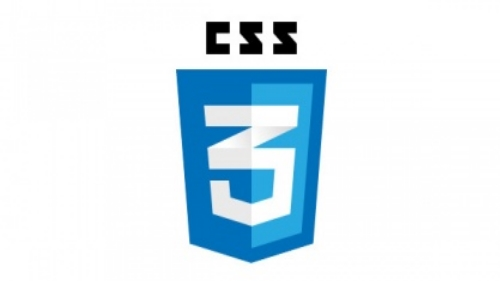

Media

Forskjellige typer for media
Vi har mange ulike former for media, noen former er utdaterte og sjeldent brukt i dagens IT verden, og andre former er dominernde.
- Vi har media spesifikasjoner for skjerm. Dette er en spesifaksjon som mye brukt, og det er det media formatet som bestemmer det vi ser på skjermen, enten det er pc, mobil, tablet eller andre browser maskiner vi bruker.
- Vi har media spesifaksjoner for skjerm og prosjektor. Dette er media spesifaksjoner som er så godt som dødt takket være responsivt design, men før den tiden så var disse spesifikasjonene svært ofte brukt.